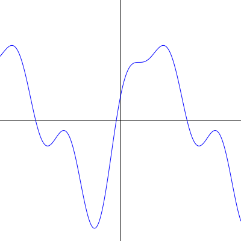

| Autor: | Wojciech Muła |
|---|---|
| Dodany: | 26.02.2007 |
Jeden ze sposobów wykreślenia wykresów funkcji polega na dostatecznie gęstym próbkowaniu wartości funkcji — otrzymany w ten sposób ciąg punktów traktowany jest jako wierzchołki łamanej, którą już można w łatwy sposób wizualizować zarówno na urządzeniach rastrowych, jak i wektorowych (plotery).
Powiedzmy, że uzyskaliśmy ciąg złożony z kilkuset lub kilku, albo nawet kilkudziesięciu tysięcy punktów. Jednak na ogół będzie tak, że część tych punktów będzie współliniowa, może nie zawsze dokładnie, ale przynajmniej z jakimś niewielkim marginesem błędu. Można więc część z punktów po prostu usunąć, co nie wpłynie znacząco na obraz, a nawet pozostanie niezauważone.
Algorytm, który to wykonuje jest bardzo prosty.
Oczywiście zamiast usuwania punktów, można utworzyć nową listę, zawierającą punkty S; wówczas w ostatnim kroku j := j + k.
Uwaga: dobrze jest stosować ten algorytm w przestrzeni widoku (ekranu), tj. dane powinny zostać przynajmniej przeskalowane do zadanej wysokości i szerokości widoku.
def refine_polyline(points, dmax): n = len(points) if n < 3: return points result = [] j = 0 while j < n: flat = True k = 2 for k in xrange(2, n-j): # S x1, y1 = points[j] # E x2, y2 = points[j+k] # equation of line that passes through points S and E a = y2 - y1 b = x1 - x2 c = -(a*x1 + b*y1) D = sqrt(a*a + b*b) # Check if all vertices in range P[j+1..j+k-1] # lie at distance not greater then dmax from # the line flat = True for i in xrange(j+1, j+k): if abs(a*points[i][0] + b*points[i][1] + c)/D > dmax: flat = False break if flat: # flat, try advance k continue else: # not flat, use k from previous iteration and break k = k - 1 break # save point S result.append(points[j]) j = j + k #while return result
I przykładowy wynik (rasteryzacja: Inkscape) dla wykresu pewnej funkcji — zostało wzięte 1000 próbek, po uproszczeniu powyższym algorytmem: 114 (dmax rzędu 0.1 [w przestrzeni ekranu]). Nie powiem na którym obrazku jest mniej punktów.
Źródła SVG obrazków:
Przedstawiona metoda zakłada, że dane są dokładne. Aproksymowanie łamanej utworzonej z danych zakłóconych jest również możliwe, zobacz: http://www.jarno.demon.nl/polygon.htm.
{kind=link}
{kind=link}